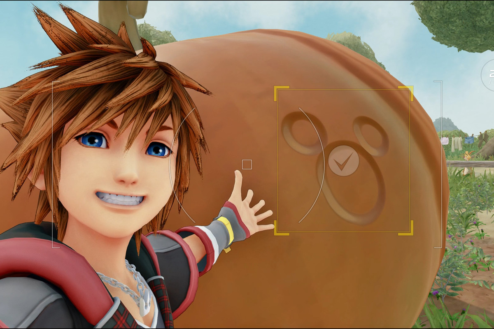

About Sora
Sora is the main protagonist of the Kingdom Hearts series, and in Kingdom Hearts 3, he continues to shine as the heart and soul of the game. He's a teenage boy with spiky brown hair, big blue eyes, and a friendly grin that makes him look like he's always up for a good time. Despite his youth, Sora is a brave and skilled warrior who wields a magical Keyblade, a weapon that can unlock the hearts of others and defeat the forces of darkness. He's always ready to help his friends and fight for what's right, even if it means putting his own life on the line. What makes Sora so endearing is his positive attitude and infectious optimism. He believes in the power of friendship and the importance of following your heart, no matter how daunting the journey may seem. He's not afraid to face his fears or make mistakes, and he learns and grows from every experience. Sora is also a bit of a goofball, with a playful and carefree personality that keeps things light-hearted, even when the stakes are high. He loves making new friends, cracking jokes, and having fun, and his childlike wonder and curiosity make him a joy to be around. In Kingdom Hearts 3, Sora faces his greatest challenge yet, as he sets out to save the universe from an impending darkness. But with his unwavering spirit and loyal companions by his side, he's ready to take on anything that comes his way.
Soras had found Mickey Mouse Emblem
Random Facts about Sora
- Sora's name is derived from the Japanese word for "sky", which is fitting as he's often depicted as reaching for the stars and dreaming big
- Sora is voiced by actress Haley Joel Osment in the English version of the game, who also voiced him in the previous Kingdom Hearts games.
- Sora is originally from Destiny Islands, a world that's not part of Disney or Final Fantasy lore, but was created specifically for Kingdom Hearts.
Sora's Friends
Sora is known for the conections that he makes. His friends are his power! Click on the links below to read more about them: